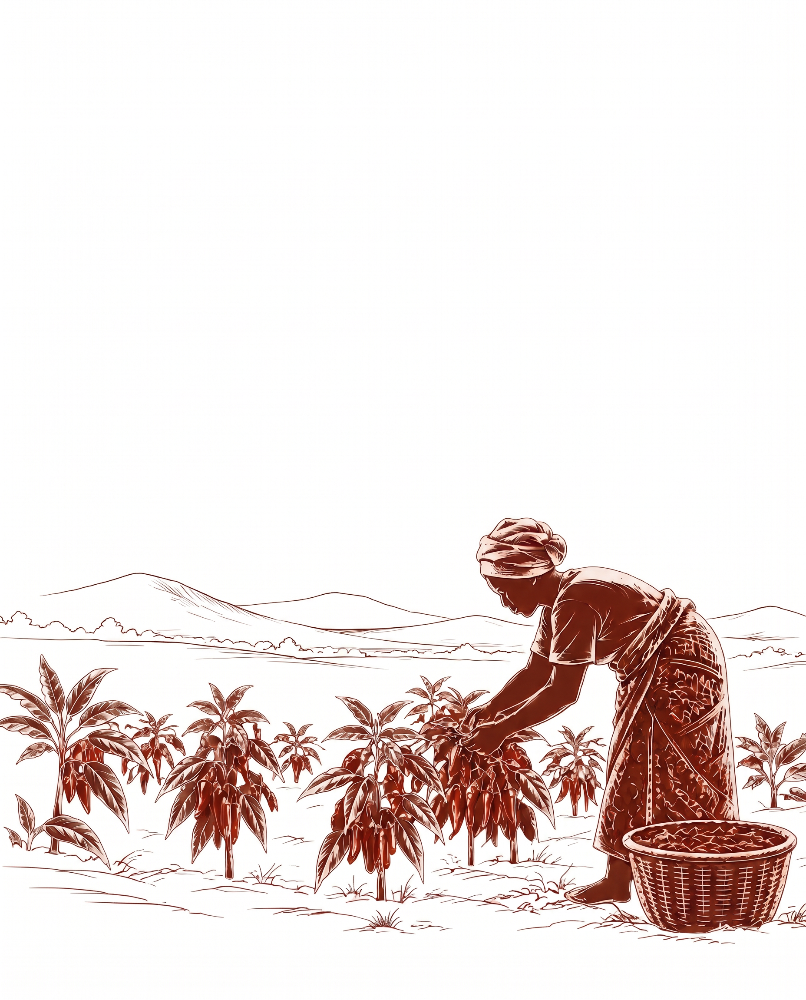

01 / Récolte
Étape 01
La récolte
C'est au cœur de la province du Kwilu, en République démocratique du Congo, que notre piment prend ses racines.
De sa récolte à son conditionnement, il traverse différentes étapes de préparation. Chacune est réalisée avec soin pour préserver ses arômes, sa couleur et toute la richesse de son goût.